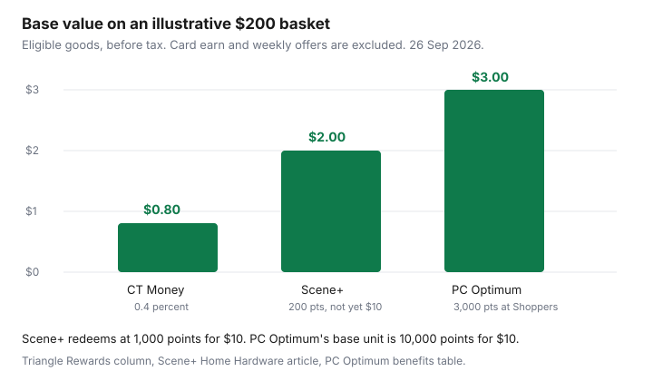

Household Items and Supplies · Canada
Canadian Tire Money, Scene+, and PC Optimum for Household Shopping: Stack Points Without Overspending
Household points are worth collecting when they ride on a trip you were already making. They are a poor reason to add a socket set or a second jug of detergent. This page is the hardware and household aisle: Triangle Rewards and Canadian Tire Money, Scene+ at Home Hardware, and PC Optimum at Shoppers. Grocery earn, grocery redemption events, and the grocery version of Air Miles are the food guides linked below.
The base rates below were on the program pages checked 26 Sep 2026. Offers change weekly. The chart uses base rates on an illustrative $200 of eligible goods, before tax. It is not a promise that your receipt will match.
Disclosure: Cash-back portals for online household orders are an offer type. Saving Optimizer may earn a commission if we later add a partner link. We do not currently claim a portal partnership. A portal does not change Triangle, Scene+, or PC Optimum base rates. Education only. No card rankings.
Key takeaways
- Triangle Rewards, on the loyalty page checked 26 Sep 2026, lists 0.4 percent CT Money on qualifying purchases at Canadian Tire and the named family stores. Redemption is $1 for $1. Card earn varies. Read the terms.
- Scene+ at Home Hardware: 50 points per $50 before tax and delivery, minimum $50. Redeem 1,000 points for $10.
- At Shoppers, the PC Optimum benefits table lists 15 points per $1 on eligible products. Every 10,000 points is like $10. Grocery base earn varies by province and is not this chart.
- On an illustrative $200 of eligible pre-tax goods, those base rates are $0.80, $2.00, and $3.00 of redemption value. Scene+ and PC Optimum still have redemption minimums.
- BMO said on 2 June 2026 that AIR MILES had moved to Blue Rewards and existing miles converted at no loss of value. This page does not assign Blue Rewards a household base rate.
Where each program earns on household items in 2026
Triangle Rewards earns Canadian Tire Money at Canadian Tire, Sport Chek, Mark’s, and the other banners named on the loyalty page, in store and on those brands’ Canadian websites, when you show the card or app or pay with a linked card. That is the household fit: tools, detergents, storage, and seasonal goods at Canadian Tire. Scene+ earns at participating Home Hardware, Home Hardware Building Centre, Home Building Centre, and Home Furniture stores, and at homehardware.ca, on personal purchases. PC Optimum’s base Shoppers rate is the one to use for shampoo, paper, and cleaning products you already buy at Shoppers Drug Mart or Pharmaprix. The benefits table says grocery base earn varies by province. Do not copy the Shoppers 15 points onto a Loblaws receipt.
AIR MILES is now Blue Rewards. BMO’s 26 January 2026 announcement said the program would transition in summer 2026 and that miles would convert to Blue Points at equivalent value with no action required. BMO’s 2 June 2026 announcement said the launch had happened and that existing miles had converted at no loss of value. What that means for a grocery flyer is the grocery transition guide. This page does not invent a Blue Rewards earn rate for a hardware aisle. If a store you use for household goods is a Blue Rewards partner, the partner’s current terms are the rate.
How you earn on groceries, and when to hold PC Optimum points for a Shoppers redemption event, stays on the food guides: maximizing PC Optimum, banking points for a bonus redemption, PC Optimum versus Scene+ versus Moi, and Scene+ on groceries. Cash back versus travel points, as a way to think about any points currency, is the cash-back guide.
Canadian Tire Money: how earn works, bonus offers, and redemption
The program terms say electronic Canadian Tire Money is calculated on the pre-tax amount of eligible merchandise and rounded to the nearest cent. The loyalty page’s Triangle Rewards column lists 0.4 percent CT Money on qualifying purchases at Canadian Tire, Sport Chek, Mark’s, L’Équipeur, Atmosphere, Party City, Pro Hockey Life, Sports Rousseau, Hockey Experts, L’Entrepôt du Hockey, and participating Sports Experts. The same column lists 3 cents per litre at Gas+ and Petro-Canada when you pay with cash or debit. Fuel is not the household basket in the chart. The credit-card columns on that page list other rates. Card earn varies. Read the terms. This guide does not rank cards.
Weekly personalized offers are advertised as up to 25 times. The offer itself states what you collect. Read that dollar or that multiplier on the offer. Do not assume every item in the store is on offer. Bonus CT Money is electronic. The signup page says you cannot collect paper Canadian Tire Money on bonus offers. If you forget the card, retroactive collection on the restrictions page allows a request within 15 days for Canadian Tire and Party City, with a maximum of two requests a week, and it is not guaranteed. A return of any item in the purchase can block it.
Redemption is $1 of CT Money for $1 of eligible merchandise, and the redeem page says you can choose an amount at checkout and pay the rest another way. You cannot redeem on shipping and handling or on tires and wheels. CT Money collected on a purchase cannot be redeemed in that same transaction. The signup page also says you will be told at checkout whether online redemption is available for that banner. Membership is for Canadian residents who are the age of majority in their province, and it is meant for personal use.
Scene+ at Home Hardware: minimum spend and $10 redemptions
The Scene+ Home Hardware article, checked 26 Sep 2026, says you earn 50 Scene+ points for every $50 spent before taxes and delivery charges. A purchase under $50 before tax and delivery earns no points. The article’s redeem line is 1,000 points for $10 off, in store or online. That is one cent a point when you redeem in 1,000-point steps. Two hundred points from a $200 trip are worth $2 at that rate, and you cannot turn them into $2 until you hold 1,000 points. Link the card in the Home Hardware account if you want online orders to pick it up. The steps are on Scene+’s linking article.
Exclusions matter. The article points to a Home Hardware excluded-products list. Purchases on Pro Contractor programs or house or charge accounts do not earn. Points from eligible purchases usually appear within 48 hours. Scene+’s general points article says earned points are forfeited if an account closes for inactivity: 24 months for a registered card and 6 months for an unregistered card. A card you never registered is a shorter fuse. Register it.
PC Optimum at Shoppers: household bonus events
The PC Optimum benefits table lists 15 points per $1 at Shoppers Drug Mart, Pharmaprix, and the beauty boutique sites, on eligible products. It lists product bonus points, 20-times events, and bonus events, with examples such as “spend $100 get 15,000 points” or “get 25,000 points when you spend $250 in store.” Every 10,000 points is like $10 of free stuff. Spend-your-points events, such as the table’s example of 10,000 points for $15, are a different week and a different value. The grocery guides cover when to hold points for those events. For a normal week, use 10,000 points equals $10 so you do not treat an example as a permanent raise.
PC Optimum Insiders terms dated August 2026 say members earn 100 points per $1, described as 10 percent when redeemed, on named PC brands, and that those points are in addition to the regular 15 points per $1 at Shoppers. The same terms say Insiders points do not combine with a store-wide, site-wide, or department-wide bonus. You receive whichever of those is greater, not both. A household bonus that is “20 times the points in the cleaning aisle” has to be read against that rule if you also have Insiders. Item-level offers are described separately from store-wide offers. Screenshot the offer before you shop. If the threshold makes you add goods you do not need, go to the next section and do the subtraction.
The overspending trap: points math on a real basket
Start with the basket you would buy with the points program turned off. Call that the real basket. The offer basket is the real basket plus anything you add to hit a threshold. The trap is paying the difference for a pile of points worth less than the difference.
Use the benefits table’s own example, labelled as an example and not as this week’s offer. Spend $100 and get 15,000 points. At 10,000 points like $10, 15,000 points are like $15. If that $100 is spending you were not going to do, you paid $100 and received about $15 of points. You are down about $85, before tax. If the $100 was detergent and paper you were buying this month anyway, the 15,000 points are extra and the trap does not apply. The same test works on a Scene+ minimum. A $40 basket earns zero Scene+ points at Home Hardware. Adding $10 of something you need, to clear $50, earns 50 points, which is $0.50 at the $10-per-1,000 rate. Adding $10 of something you do not need, to earn $0.50, is the trap.
Triangle’s 0.4 percent on a $200 eligible pre-tax basket is $0.80. A 25-times offer applies only to the items the offer names. Read the offer’s CT Money. If it pays $5 on a $40 item you wanted, that is $5. If it pays $5 on a $40 item you did not want, you spent $40. Card earn varies. Read the terms. A cash-back portal on an online household order is an extra layer after the cart is final. Open it, note the portal’s rate, and place the order you had already decided. A portal is not a reason to add a line.

Program comparison table
| Program | Household stores | Base earn | Redemption | Bonus type | Watch-out | Value on $200 |
|---|---|---|---|---|---|---|
| Triangle Rewards | Canadian Tire and the family stores named on the loyalty page, plus their Canadian sites. | 0.4 percent CT Money on qualifying pre-tax purchases, Triangle Rewards column. | $1 for $1, any amount the checkout allows. Not on shipping or tires and wheels. Not the CT Money just earned on that sale. | Weekly personalized offers, advertised up to 25 times. The offer states the amount. | Card earn varies. Read the terms. Retroactive points are limited and not guaranteed. | $0.80 |
| Scene+ at Home Hardware | Participating Home Hardware banners and homehardware.ca. Personal purchases. | 50 points per $50 before tax and delivery. Nothing under $50. | 1,000 points = $10 off. | Scene+ also lists gift-card redemptions from 1,000 points. Store offers vary. | Excluded products. Contractor and house accounts earn nothing. Inactive accounts forfeit points. | 200 points, worth $2 once you can redeem, which this basket alone cannot. |
| PC Optimum at Shoppers | Shoppers Drug Mart and Pharmaprix, for eligible products. Grocery banners are a different base rate. | 15 points per $1 on eligible products, benefits table. | 10,000 points is like $10 in a normal week. Spend-your-points events can change that. See the grocery guides. | Product offers, 20-times events, and threshold bonuses. The table’s examples are examples. | Insiders does not stack with a store-wide bonus. You get the greater one. Do not buy extra to hit a threshold. | 3,000 points, like $3, and short of a 10,000-point redemption on its own. |
Which program is “best” is the store you are already standing in. Collect Triangle at Canadian Tire, Scene+ at Home Hardware when the bill clears $50 before tax and delivery, and PC Optimum at Shoppers when the offer matches the aisle. Do not open a fourth program for one basket. Do not spend the difference between your real list and the offer’s list unless that difference is smaller than the points you will actually redeem.
Sources & date stamps
- Triangle loyalty page, redeem page, program terms, and retroactive-collection restrictions, checked 26 Sep 2026. Triangle Rewards column: 0.4 percent. Redemption $1 for $1. Pre-tax calculation in the program terms.
- Scene+ help, “How do I earn and redeem points at Home Hardware,” and the linking article, checked 26 Sep 2026. 50 points per $50 before tax and delivery. 1,000 points = $10. Inactivity forfeiture on the general points article: 24 months registered, 6 months unregistered.
- PC Optimum benefits table (English PDF) and PC Optimum Insiders terms dated August 2026. Shoppers base 15 points per $1. 10,000 points like $10. Insiders 100 points per $1 on named PC brands, not combined with a store-wide bonus.
- BMO newsroom, 26 January 2026 and 2 June 2026: AIR MILES transition to Blue Rewards, conversion at no loss of value. Grocery handling is on the food guide.
Frequently asked questions
How does Canadian Tire Money work in 2026?
Triangle Rewards members earn electronic Canadian Tire Money on eligible pre-tax purchases and redeem it at $1 for $1 of eligible merchandise. The loyalty page checked 26 Sep 2026 lists 0.4 percent on the Triangle Rewards column at Canadian Tire and the other family stores named there, when you show the app, card, or fob or pay with a linked card. Credit-card earn varies, so read the terms. Money just earned on a purchase cannot be redeemed in that same transaction, and shipping is excluded.
How many Scene+ points do I get at Home Hardware?
Scene+ says you earn 50 points for every $50 spent before taxes and delivery, so a purchase under $50 earns nothing. You redeem 1,000 points for $10 off at participating Home Hardware banners, in store or online. Some products are excluded, contractor and house accounts do not qualify, and points usually appear within 48 hours.
Are Shoppers PC Optimum bonus events worth it for household items?
They are worth it when the offer covers products you already needed and the points beat any extra spend. The benefits table’s example of spending $100 to get 15,000 points is like $15 at the table’s rate of 10,000 points for $10, so an extra $100 you did not need is a loss of about $85. A bonus on paper towels you were buying anyway can work. Read the offer in the app that week, because the table’s examples are examples.
How do I avoid overspending for points?
Price the basket you meant to buy, price the basket the offer wants, and skip the offer when the difference is larger than the points you will redeem. Do not add a tool or a cleaner just so a multiplier has something to multiply. Card earn varies, so read the terms. A cash-back portal is the same test: open it only when the cart is already final.
Which program is best for household shopping?
The program at the store you already use. Triangle Rewards fits Canadian Tire and the family stores on its list, Scene+ fits a Home Hardware trip that clears $50 before tax and delivery, and PC Optimum fits household items you already buy at Shoppers. None of the three is a national winner. Grocery earn belongs on the food guides.